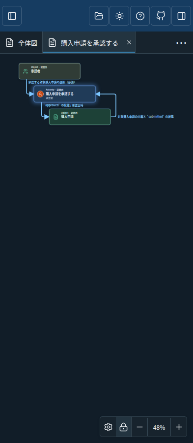
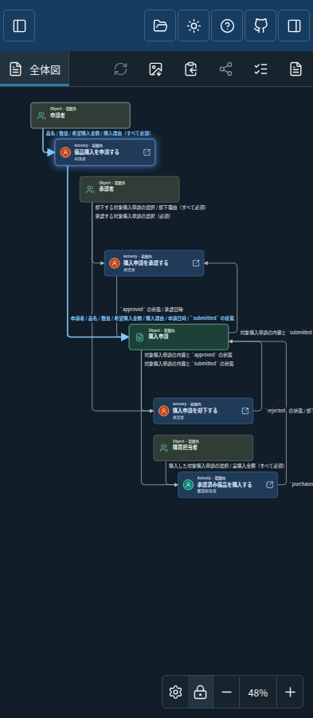
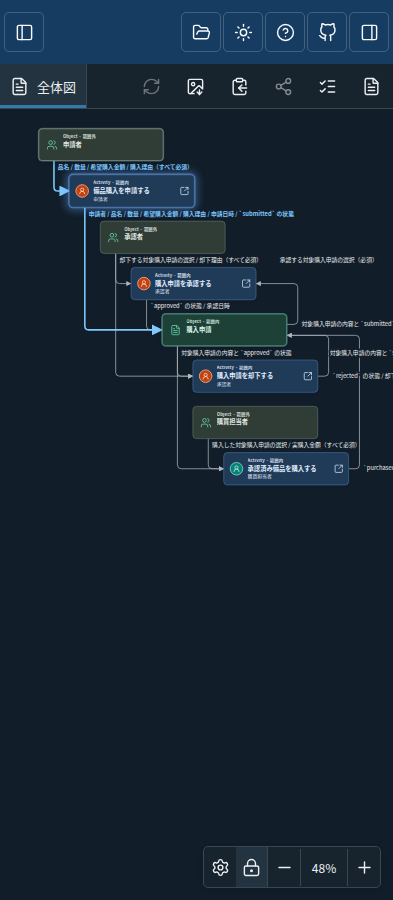
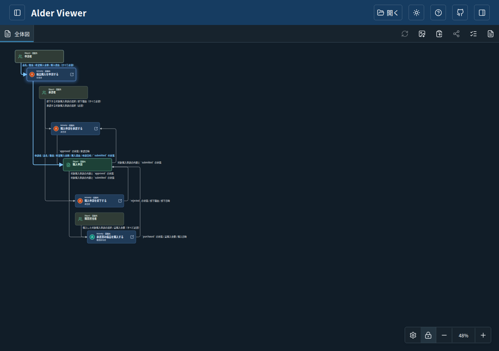
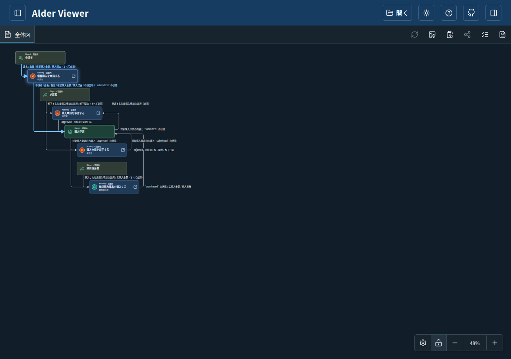

同じ備品購入申請の業務設計書を、同じ画面幅・ダークテーマ・48%表示で比較しています。元画像で示された申請ActivityのOutputと、承認者・承認・購入申請・却下の間隔を確認できます。元の添付画像は公開していません。
| 区間 | 変更前の上端間隔 | 変更後 |
|---|---|---|
| 申請者 → 備品購入を申請する（黄色の基準） | 96 | 96 |
| 承認者 → 購入申請を承認する | 192 | 96 |
| 購入申請を承認する → 購入申請 | 192 | 96 |
| 購入申請 → 購入申請を却下する | 192 | 96 |
単位は図の座標です。カードの高さ68、次のカードまでの空き28。複数キャプションは同じ出発行の横方向へ配置し、長文では横スクロール範囲が広がる場合があります。保存済みの座標は維持され、既存文書へ新配置を適用するには「レイアウトを初期値に戻す」を使います。





変更前：f9a9708e4b9b2992f5572ab4c34cf00c24a7953e
変更後：a64805a66c66d970aca35f2c6913cfed14817939